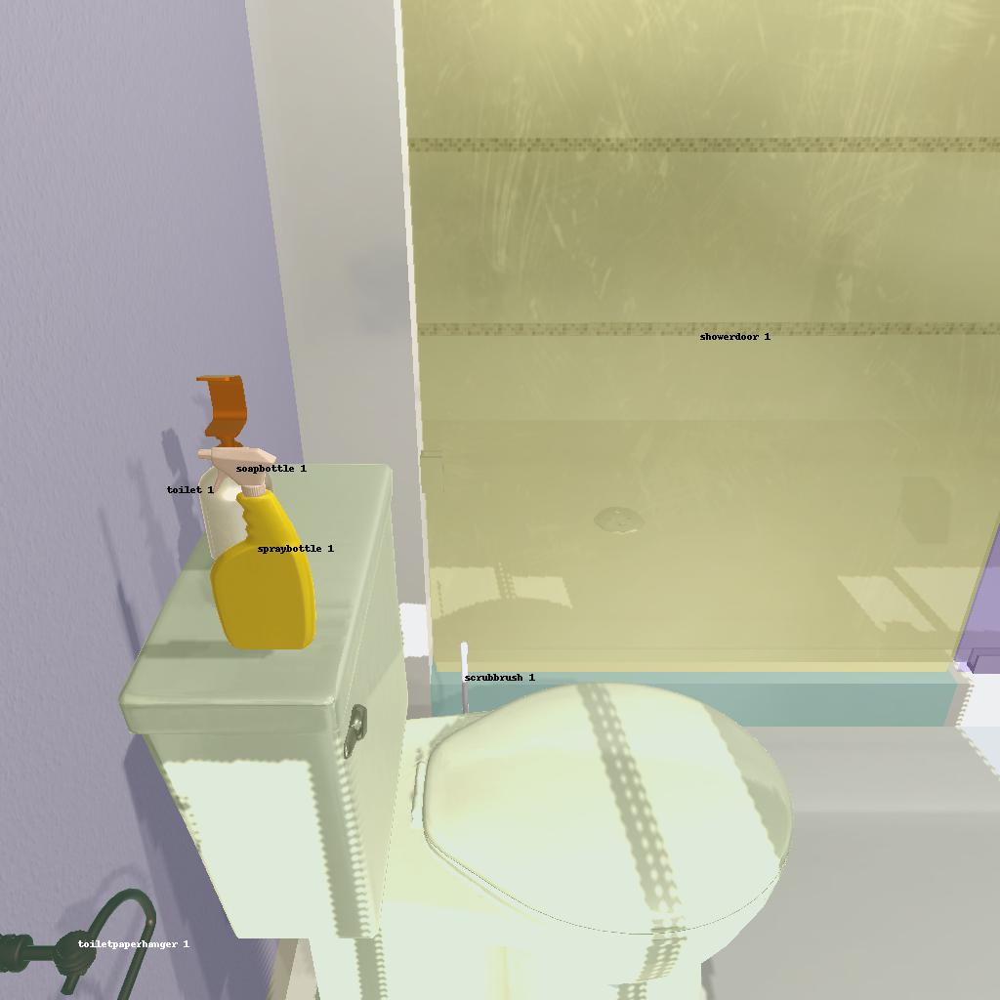
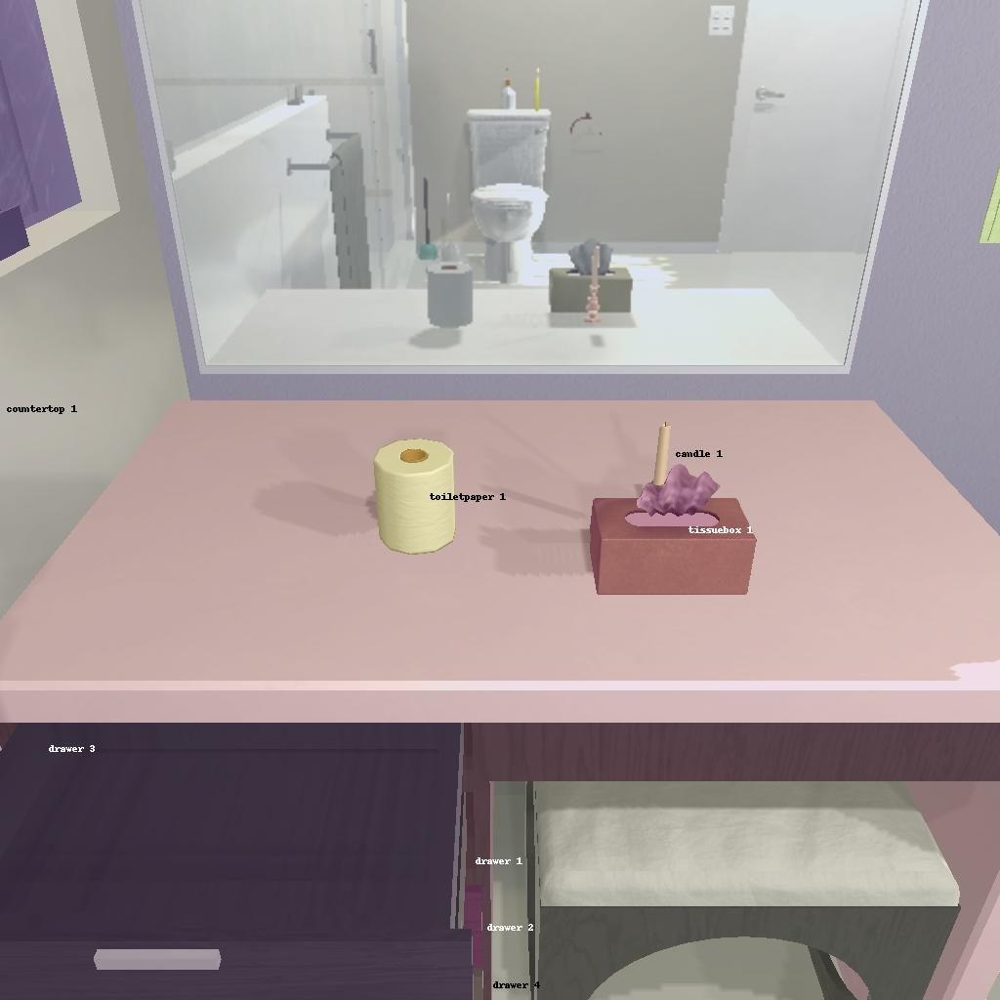

---------------------------------------------------------task: 28---------------------------------------------------------
--------------------------------------------------------------------------------------------------------------------------------------------------------------------
--------------------------------------------------------------------------------------------------------------------------------------------------------------------
Step:--------------------------------------------------------------------------19-------------------------------------------------------------------------------
----------------------------------------
VLM Prompt:
Image1:
Image2:
Image3:
**Instruction**
1. Analyze the provided image to identify all visible household objects, focusing on those relevant to the task description "put two spraybottle in toilet."
2. Use the analysis of the image and the task hint "The agent must find an object of the desired type, pick it up, find the correct location to place it, put it down there, then look for another object of the desired type, pick it up, return to previous location, and put it down there with the other object." to answer the question: what is the most reasonable action in the choices for the task description "put two spraybottle in toilet"?
4. Decide and write the answer using the template: The answer is: (i): , where i is the real number. If there is no desired object in the image, search every place based on **Initial Observation** to find the object. And if no one is exactly correct, choose a similar answer.
**Initial Observation**
You are in the middle of a room. Looking quickly around you, you can see bathtub (1), bathtubbasin (1), cart (1), sink (1), garbagecan (1), sinkbasin (1), countertop (1), drawer (1-4), toilet (1), toiletpaperhanger (1)
**Answer Choices**
(1): go to bathtub 1
(2): go to bathtubbasin 1
(3): go to cart 1
(4): go to sink 1
(5): go to garbagecan 1
(6): go to sinkbasin 1
(7): go to countertop 1
(8): go to drawer 2
(9): go to drawer 3
(10): go to drawer 4
(11): go to toilet 1
(12): go to toiletpaperhanger 1
(13): open drawer 1
(14): close drawer 1
(15): take tissuebox 1 from drawer 1
(16): take toiletpaper 1 from drawer 1
(17): take handtowel 1 from drawer 1
(18): take candle 1 from drawer 1
(19): examine drawer 1
**Answer**
Let's think step by step by following the instructions.
----------------------------------------
----------------------------------------
Original Response:
From Image1, we can see that there is already one spraybottle (spraybottle 1) on the countertop near the toilet. According to the task description, we need to put two spraybottles in the toilet. The first reasonable action would be to pick up the spraybottle that is already visible in the image.
However, none of the answer choices directly states "pick up spraybottle 1," so we need to find a similar action that would lead us to interact with the spraybottle. Since the spraybottle is located near the toilet, the closest action that would allow us to interact with it would be to go to the toilet.
The answer is: (11): go to toilet 1. After going to the toilet, the agent can pick up the spraybottle and place it in the toilet, then look for another spraybottle to complete the task.
----------------------------------------
----------------------------------------
>>> Refine Original VLM Response and Get Pure Action: go to toilet 1
----------------------------------------
-----------------------------------------------------------------
Running time: 10.647072315216064 seconds
Total Money: 18.538319999999995
-----------------------------------------------------------------
-----------------------------------------------------------------
Text Observation:You arrive at loc 11. On the toilet 1, you see a showerdoor 1, a spraybottle 1, a soapbottle 1, and a scrubbrush 1.
-----------------------------------------------------------------
UNSUCCEED